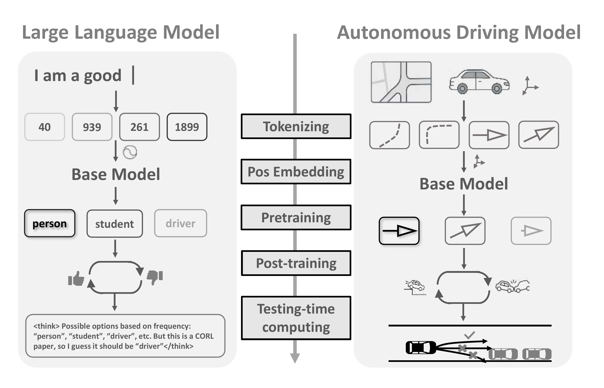

Motivation and Method

As illustrated in the above figure, the technical pipeline of autonomous driving motion generation exhibits a notable resemblance to that of large language models (LLMs). This observation naturally prompts the question: which modules, proven effective in LLMs, can be directly transferred to motion generation for autonomous driving, and which ones necessitate domain-specific adaptation? In this work, we conduct a systematic investigation of these five core components. Our key finding is that, despite differences in application domains, several technical modules are transferable between large language models (LLMs) and motion generation tasks.

We design a GPT-like trajectory generation model that predicts the next motion token in an autoregressive
manner and iteratively constructs complete trajectories. To maintain awareness of the map and surrounding
agents throughout the generation process, our model employs multiple attention mechanisms during
inference. Specifically, we perform:
(1) self-attention over each agent's motion tokens across different time steps;
(2) self-attention between different agents at the same time step;
(3) cross-attention over the static map context; and
(4) cross-attention over non-predicted agents that are excluded from the GPT input during rollout.